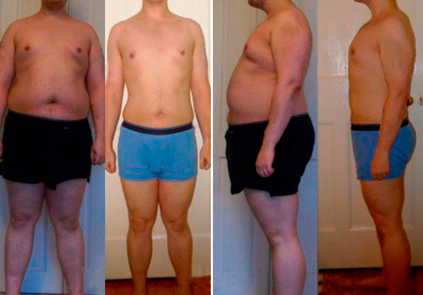
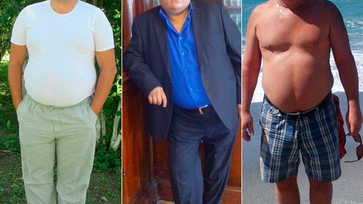
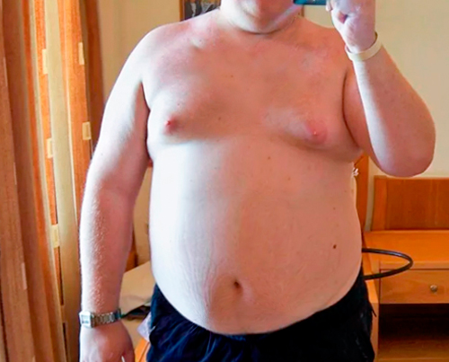
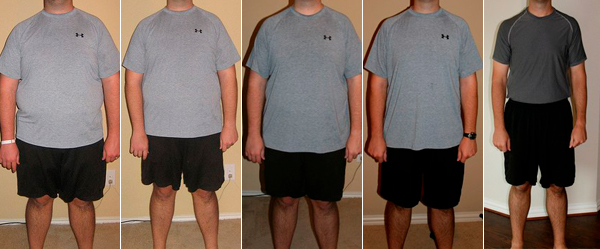
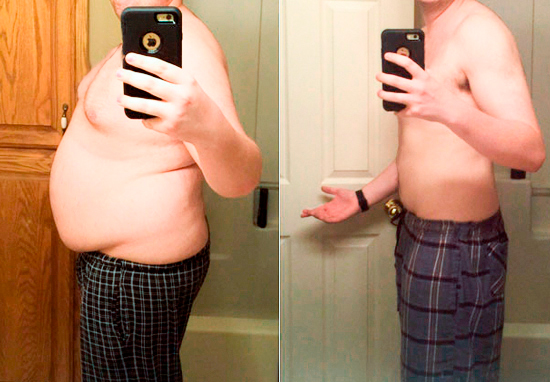
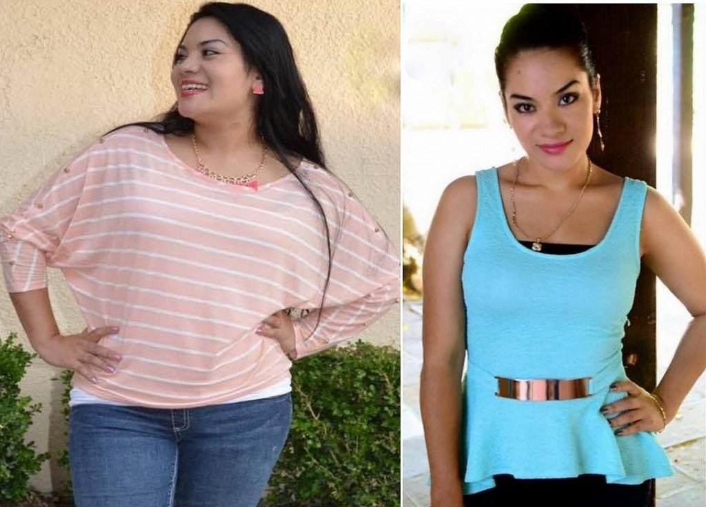
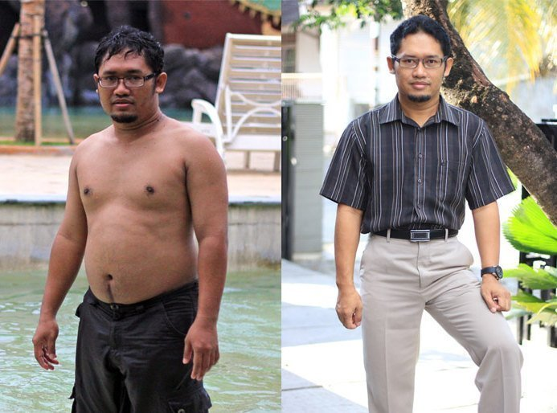
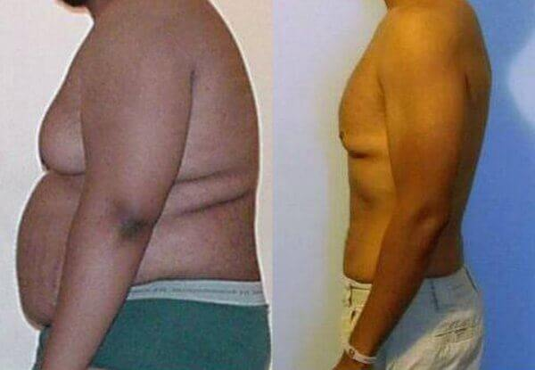

- Pedro
- 115 comentarios
- 227.710 visitas
Cómo perder 45 kilos sin dietas ni entrenamiento
Este método os ayudará a perder hasta 15 kilos a la semana de forma RÁPIDA y SEGURA
¡Hola a todos! Pedro Gonzáles con todos vosotros, como de costumbre. He conseguido perder peso usando un método prácticamente desconocido y es posible que me eliminen esta publicación en breve. Este nuevo método es un verdadero avance en el mundo de la nutrición . Muchos dietistas intentan desesperadamente ocultar este método porque revelarlo sería muy perjudicial. He perdido mucho tiempo y dinero torturándome con dietas y entrenadores personales, pero nada me funcionaba . Encontré otra solución que resultó ser tan sencilla y accesible que me resultaba difícil de creer. Ahora quiero compartir este secreto con todos los que tenéis problemas de sobrepeso y salud.
Esta es mi historia:
Siempre me ha gustado comer mucho, así que he sido bastante grande desde mi niñez. Lo que más me gustaba era comer comida basura sentado delante de la televisión después del trabajo. Mi mujer no hacía lo mismo que yo, aunque nunca me regañaba por eso. Pero cuando cumplí 25 empecé a engordar muy rápidamente, especialmente por la zona del abdomen. No me di ni cuenta de cómo me creció tanto. Parecía un auténtico cerdo. Cuando tenía 33 años pesaba 125 kilos . O sea, 46 kilos más de lo recomendado para mi estatura.
Además, tenía graves problemas de salud. Tenía un dolor intenso en el costado, en la zona del páncreas. Me cansaba con mucha facilidad, tenía sudoración excesiva y me faltaba el aire. Pero lo peor de todo fue que empecé a padecer impotencia . Para ser honesto, mi enorme barriga llevaba mucho tiempo impidiéndome verme el miembro. Pero cuando me dejó de funcionar por completo, me di cuenta de que el asunto se me había ido de las manos. Mi impotencia afectó a mi vida familiar. Me pasaba el día discutiendo con mi mujer. No poder satisfacerla y eso fue un gran golpe para mi autoestima. Me odiaba a mí mismo y me sentía como un auténtico perdedor.
Me hicieron unas pruebas médicas en el hospital y los resultados fueron muy negativos. Corría un riesgo importante de desarrollar diabetes . Tantos años comiendo comida basura habían destrozado mi cuerpo, especialmente el páncreas.
Empecé a seguir una dieta estricta. Cuando te has pasado toda la vida comiendo lo que te ha dado la gana, una dieta puede convertirse en una verdadera tortura psicológica . Cada semana me subía a la báscula con la esperanza de que todo aquel tormento por el que estaba pasando no fuera en vano. Pero el peso siempre marcaba lo mismo, 125,9 kg . Después de 3 meses, decidí reforzar mi dieta con ejercicios y comencé a ir al gimnasio. Uno de los entrenadores me dijo que necesitaría unos seis meses para empezar a bajar de peso, ya que al pesar tanto, los ejercicios intensos eran demasiado peligrosos para mí . Por lo tanto, hacía solo ejercicios sencillos, tales como caminar en la cinta, montar en bicicleta estática, hacer sentadillas y saltar la comba. Pero hasta hacer 10 sentadillas era difícil para mí. Me quedaba sin aire y me daban mareos. La gente que había en el gimnasio se reía al verme. Y entiendo que debe ser bastante gracioso ver a un idiota gordo y enorme jadeando y sudando como un pollo haciendo ejercicios que cualquier jubilado podría hacer fácilmente.
Fue la temporada más difícil de mi vida. Tenía hambre todo el día. Incluso soñaba con la comida. Estaba muy nervioso e irritado. Quizás habría sido más fácil si hubiera contado con el apoyo de mi mujer, pero ella me odiaba. Estábamos todo el día discutiendo y me insultaba diciéndome cosas terribles, como "bola de cebo" o "perdedor". Me decía cosas como esta: "Nunca me has satisfecho en la cama" . Fue un desastre. Mi propia mujer no creía en mí. Al poco tiempo, me dejó por otro hombre y me pidió el divorcio.
Después de eso, intenté seguir con mi dieta y hacer ejercicios en el gimnasio durante otro mes. Pero cuando volví a subirme a la báscula y volvió a marcarme esos horribles 125 kg, decidí dejar la dieta . Y otra vez empecé a atiborrarme de comida rápida acompañándola de alcohol.
No tenía ganas de vivir. Me habría suicidado si no hubiera sido por mi amigo Andrés. Él me salvó la vida. Me fui a vivir un tiempo a su casa para superar la depresión. Le conté a Andrés todo lo que me había estado guardando dentro. Me sentía avergonzado de ser un hombre adulto que lloraba y gimoteaba como una niñita. Pero vivir con todo aquello dentro de mí me resultaba tremendamente difícil. Andrés fue muy comprensivo conmigo. Me escuchaba atentamente y una de las veces me dijo: ''¿Por qué no me lo habías contado antes? Existe un método para adelgazar que es rápido y seguro. Es la solución a todos tus problemas. Yo lo he estado usando durante mucho tiempo y funciona de verdad ". Después de decirme esto me dio un tubo pequeño con la etiqueta de . Me dijo que era un producto natural para perder peso y mejorar el metabolismo.

Resultaba difícil de creer, ¡pero luego me di cuenta de que funcionaba de verdad porque Andrés siempre comía mucha comida basura y otros alimentos poco saludables, pero siempre estaba delgado y gozaba de buena salud. Me puse a buscar en Internet información sobre y encontré opiniones de dietistas españoles con muy buena reputación que aseguraban que este producto era un auténtico avance en el mundo de la nutrición. El producto es natural, seguro y no tiene contraindicaciones especiales. ha sido probado y certificado. Se fabrica en estricto cumplimiento de las normas aprobadas por las GMP . Eso me hizo confiar en y empecé a tomarlo siguiendo las instrucciones de uso. Echaba un comprimido efervescente en un vaso de agua y me lo bebía dos veces al día 30 minutos antes de las comidas.
Mis resultados:
Después de una semana tomando , mi peso no varió nada, pero empecé a sentirme mucho mejor. Me sentía con mucha fuerza y energía. Y, después de 14 días , me quedé muy sorprendido. ¡Mi peso había bajado 9,3 kilos a pesar de que había estado comiendo todo lo que había querido ! ¡Había perdido peso fácilmente y sin restricciones! ¡Fue increíble!
Después de 7 días más, ¡conseguí perder 8,5 kilos! La grasa de mi cuerpo se fue derritiendo de forma rápida y sencilla en el transcurso de 2 meses y medio.
Me sentía cargado de energía todos los días y me dejó de doler el costado. También conseguí superar mi impotencia. Después de que mi cuerpo se desintoxicara, mi erección se volvió más fuerte y más duradera (ahora duro una media de 40-60 minutos en la cama). Además, empecé a ser atractivo a los ojos del sexo opuesto. Las mujeres comenzaron a fijare en mí por la calle . ¡Era algo espectacular! De repente, mi exmujer volvió a aparecer en mi vida e intentó recuperarme. Me pidió disculpas muchas veces, pero yo ya no quería volver con ella.
Ahora quiero explicaros brevemente cómo funciona . Contiene L-carnitina, cafeína, extracto de Coleus forskohlii, ácido succínico, vitaminas B2, B5, B6, B8 y B12, extracto de alga Fucus, extracto de guaraná y quitosano. Estos componentes
- reducen los hidratos de carbono absorbidos por el tracto gastrointestinal, reduciendo así la cantidad de sustancias nocivas en el torrente sanguíneo. Por lo tanto, puedes comer todo lo que quieras y las sustancias nocivas no penetrarán en tu sangre ;
- facilitan la producción de adiponectina, una hormona responsable de la quema de grasas en nuestro cuerpo ;
- normalizan los niveles de colesterol y azúcar en sangre;
- eliminan las toxinas.
Realmente no me di cuenta de lo que había conseguido hasta que me dieron los resultados de un nuevo examen médico que me hice y estaba totalmente sano. La promesa del fabricante del producto era verdad. Mis niveles de azúcar y colesterol en la sangre eran normales. Y comía todo lo que quería y en las cantidades que quería. Creo que es lo que hace cualquier hombre .
Durante los 3 meses que estuve tomando , conseguí perder 45 kilos y, ahora, peso 79 kilos .
El producto no es adictivo. Yo hice una pausa bastante larga entre los cursos de tratamiento y me sentía bien. Además, los kilos que perdí nunca los volví a recuperar. Ahora mi peso estable es siempre 79 kilos .
Aquí os dejo un enlace a la página web oficial de para aquellos que queráis bajar de peso rápido y fácilmente como lo hice yo. Tomad y mejoraréis vuestra salud y calidad de vida. Este producto es muy barato en comparación con los increíbles resultados que conseguiréis a cambio. TENED EN CUENTA que es el único sitio web en el que se puede pedir el producto auténtico. Otros sitios web venden productos falsos fabricados en China que no son eficaces. Hay muchos sitios web de este tipo. Cuando yo hice mi pedido de en el sitio web oficial no tuve que pagar nada. Lo pagué cuando recibí el producto. También me gustaría añadir que la entrega fue muy rápida. El paquete me llegó al día siguiente.
Si habéis decidido probar , os recomiendo que lo hagáis ahora mismo ya que el producto dejará de venderse al por menor el día
dio un giro de 180 grados a mi vida. Ahora estoy muy contento con mi cuerpo, me siento saludable y disfruto cuando las chicas me miran. Creo que compartir esta experiencia era una necesidad para mí. ¡Dejad de torturaos con dietas! Cuidaos. Os deseo muchísima suerte.
Gracias por vuestra atención. :-) Un abrazo, Pedro

Comentarios
Justo estaba buscando información sobre . ¡Gracias por tu evaluación tan detallada!
¡Es una verdad absoluta! ¡Yo tomé estos comprimidos efervescentes hace un año y perdí 19 kg en un mes ! ¡Estaba más delgada cada día que pasaba! Desde entonces ya ha pasado un año y no he vuelto a recuperar el peso que perdí. Peso 49 kg .
He estado tomando mucho tiempo porque sé lo efectivo que es. Primero, compré un producto falso que demostró tener un efecto cero. Solo se puede pedir el producto original aquí y a un precio muy bajo . ¡Funciona perfectamente! Te sientes genial y tienes erecciones muy duraderas, además de que se te pone dura como el acero. Además, perdí 26 kilos. ¡Otra ventaja muy agradable!
¡No puedo estar más de acuerdo! funciona de verdad. Llevaba luchando contra la grasa abdominal un montón de años. Estuve yendo al gimnasio durante 3 meses sin ningún resultado. Entonces mi mujer hizo un pedido de para mí y toda la grasa de mi estómago desapareció literalmente en un mes.
Tu erección sin duda será más fuerte cuando expulses todas las toxinas de tu cuerpo.
¿Alguien lo ha pedido ya? ¿Cuánto tardó el envío?
Yo lo pedí en la página web oficial . La entrega fue rápida, tardó solo 2 días . Mi entrenador me dijo que lo tomara. ¡Los resultados son impresionantes! Yo perdí más de 31 kg en 2 meses y medio .
Estuve viendo un programa de televisión en el que salía el doctor Oz y otros médicos famosos hablando sobre estos comprimidos efervescentes. Dijeron que en el 98 % de los casos el sobrepeso está causado por trastornos endocrinos, altos niveles de azúcar y colesterol en la sangre y la intensidad del metabolismo . Por lo tanto, parece que las historias que describen la eficacia de este producto son creíbles.